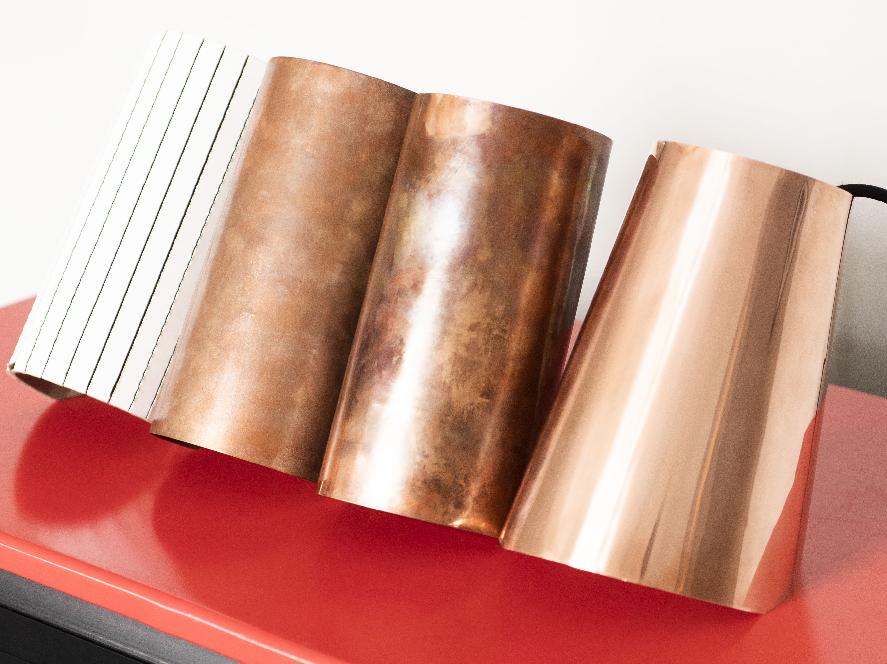
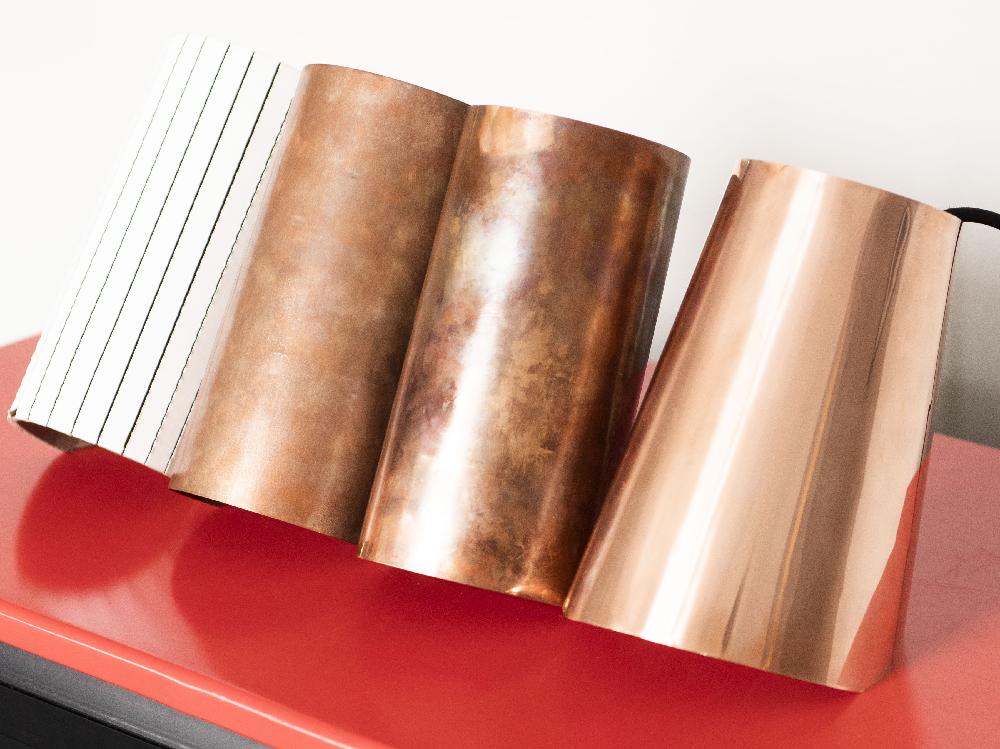

Dusk
Behavioral Design
Dusk is an ambient light that creates an inviting and cozy atmosphere. The reflective quality of the polished copper adds an orange hue to the light, emulating the colors of a setting sun and giving the impression of warmth. The simple tilted design allows light to be thrown from the top and bottom while concealing the harshness of the bulb. The conical shape supports its offset center of gravity and enhances the spotlight effect from the top and the sweeping light that comes from the base. Dusk is hand fabricated from a single sheet of 20 gauge copper and held together with simple wire rivets. The lightbulb housing is secured in place with a copper wire staple that is fed into the body.
The inspiration for this lamp came from observing the behavior of students working at their desks with different lights. The directed light from their lamps was often too harsh which led them to turn their lamps towards the wall or ceiling to create bounced light. The reflected light created a pleasant and comforting atmosphere. Dusk emulates the reflected light effect and enhances the experience with its warm glow

 
